Ahora
La toma que toca, en una sola pantalla.
La pantalla Ahora muestra lo que toca tomar, lo que quedó sin marcar y lo que viene después. Un toque en «Lo he tomado» y listo. Letra grande y botones grandes, sin registros.
Recordatorio de medicamentos
El recordatorio de medicamentos a su hora, para ti y para quien cuidas. Letra grande, botones grandes y sin registros.
Gratis · «Familia y cuidador» en compra única, sin suscripción
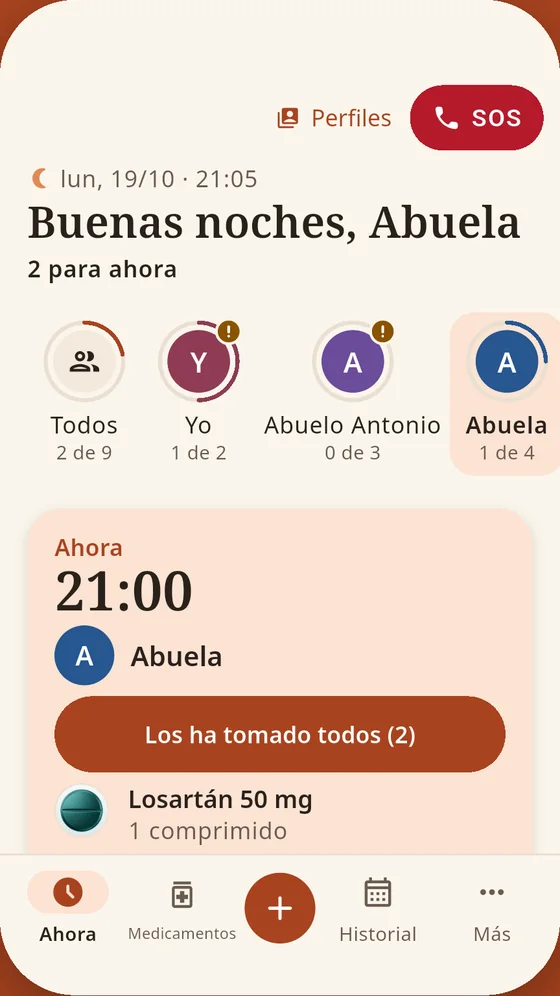
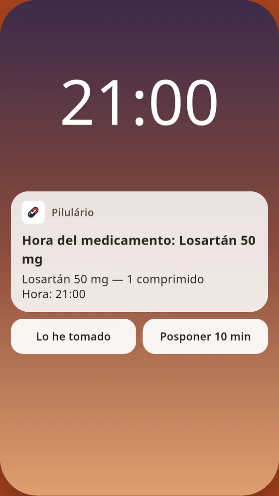
Pensado para quien toma medicación a diario y para quien cuida de alguien.
Ahora
La pantalla Ahora muestra lo que toca tomar, lo que quedó sin marcar y lo que viene después. Un toque en «Lo he tomado» y listo. Letra grande y botones grandes, sin registros.
El aviso
El aviso trae los botones «Lo he tomado» y «Posponer 10 min». Elige cómo avisar: discreto, insistente —se repite hasta que lo marques— o alarma.
Existencias
Cuenta lo que queda en la caja y Pilulário te dice cuándo se acabará. «He comprado más» suma la caja nueva a lo que quedaba.
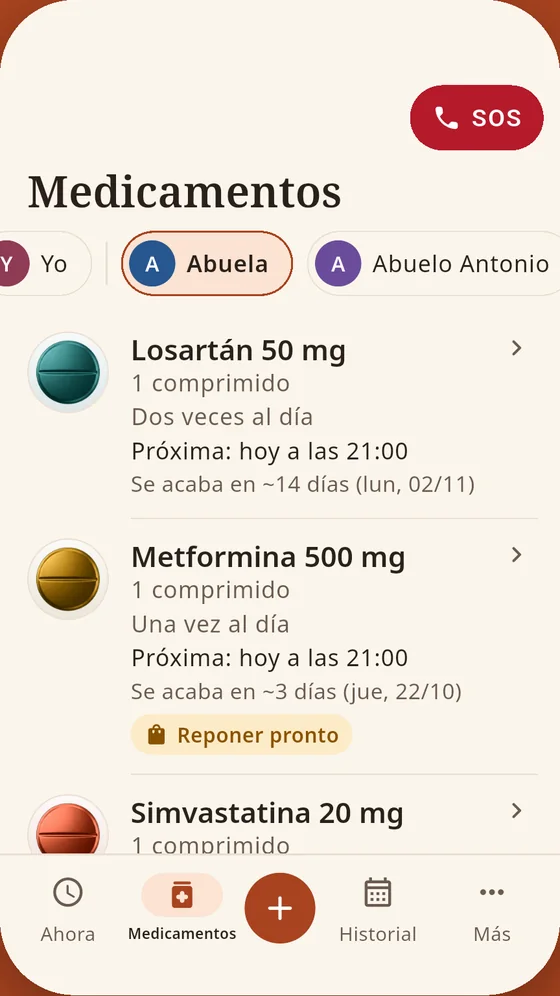
Historial
El día, la semana y el mes: lo que se tomó, lo que se omitió y quién lo marcó. ¿Te equivocaste? Deshazlo.
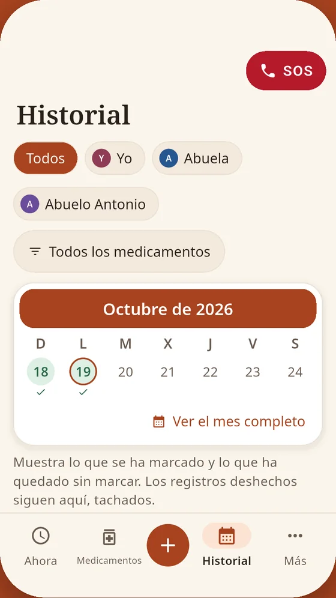
Para quien cuida
Cada persona con su color y su foto, sus medicamentos y sus avisos. Las anotaciones, alergias y cuidados quedan a la vista de quien va a dar la medicación.
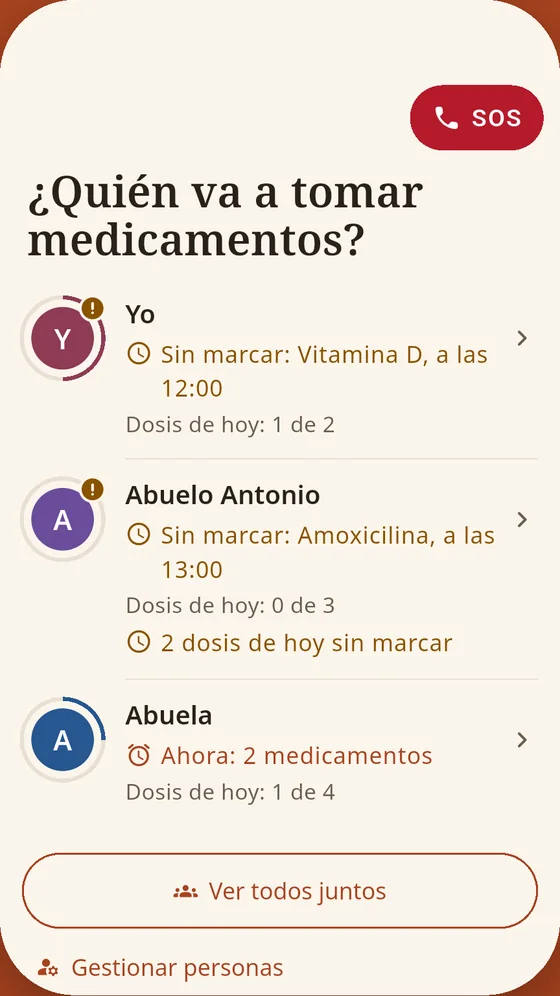
Traspaso de cuidados
¿Vas a dejar a otra persona a cargo? Pásale los medicamentos con la cámara, sin internet, y recibe de vuelta el informe de lo que se dio.
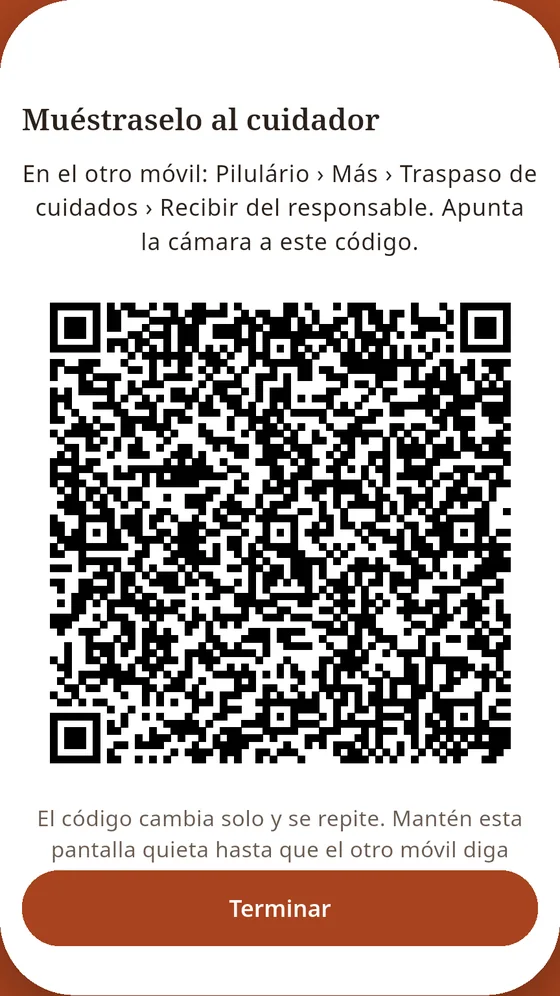
Salud de los recordatorios
La app comprueba si el móvil deja sonar los avisos y te muestra qué ajustar. Y el botón SOS tiene los números de emergencia y el teléfono de quien cuida.
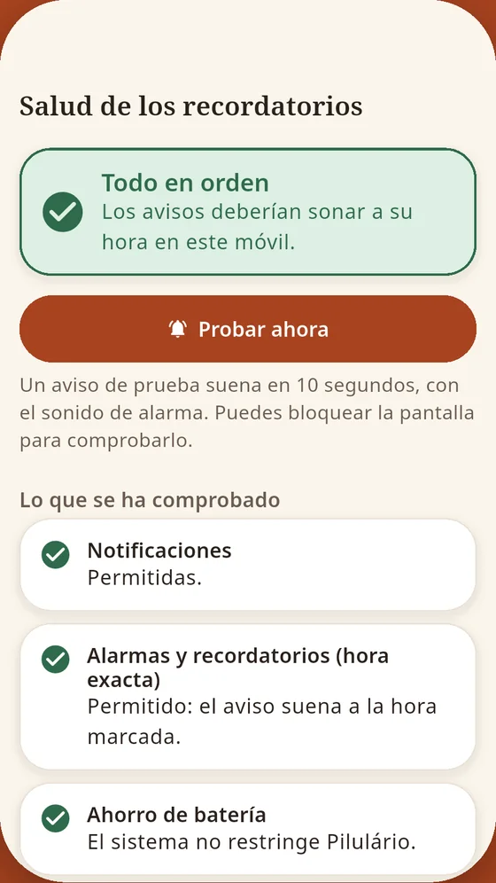
Los avisos, las existencias, el historial y el SOS son gratis, sin límite de medicamentos. La compra única «Familia y cuidador» añade lo que facilita la vida de quien cuida de más personas.
Las pantallas de la app.
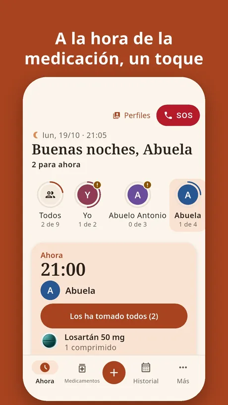
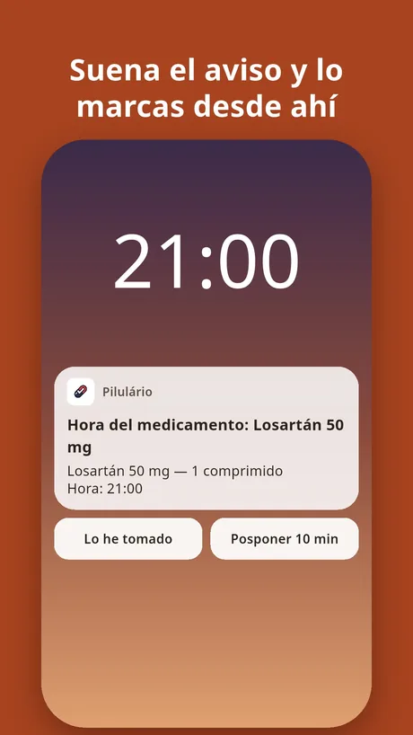
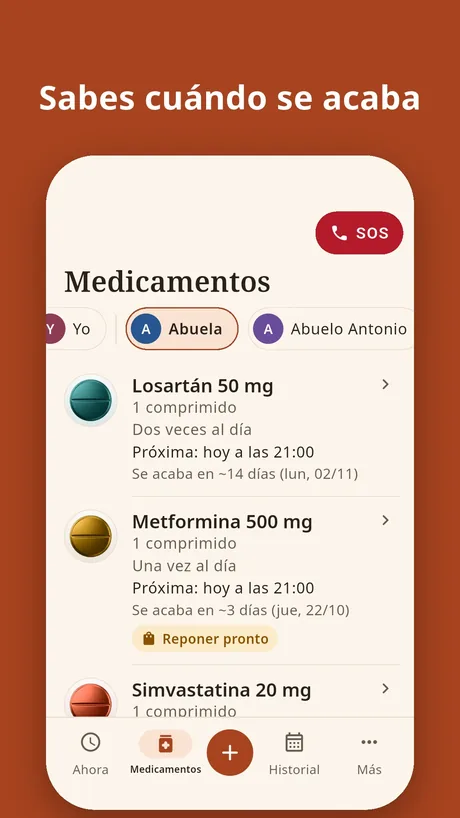
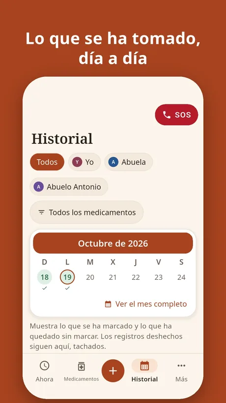
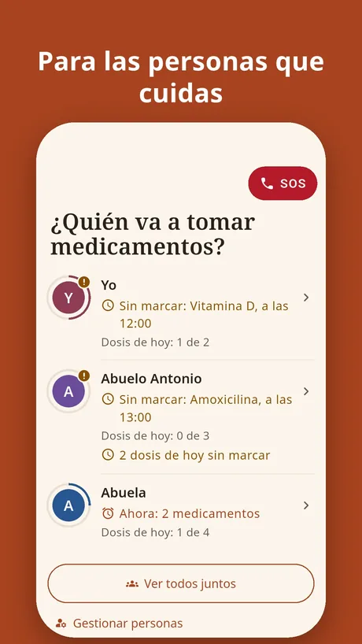
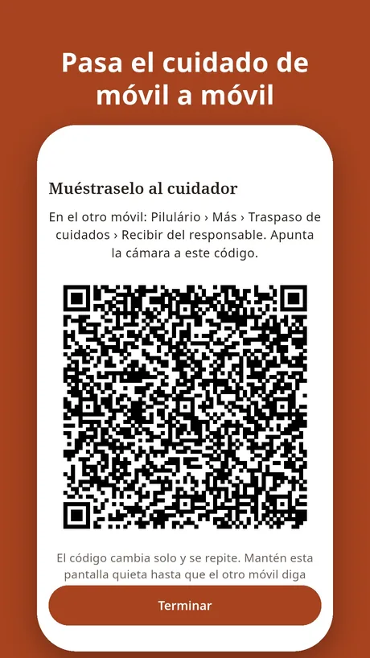
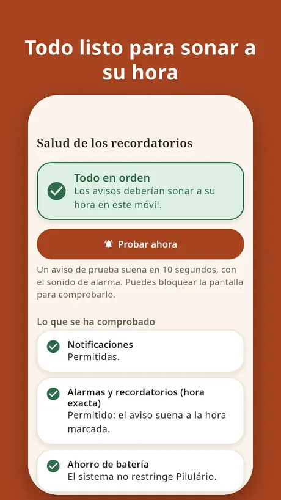
Sin cuenta, sin anuncios y sin recogida de datos. Pilulário no usa internet: lo que escribes se queda en tu dispositivo y solo sale cuando compartes un resumen, exportas la copia de seguridad o pasas el cuidado a otro móvil.
Sí. La alarma, las existencias, el historial y el SOS son gratis, sin límite de medicamentos. La compra única «Familia y cuidador» añade varias personas, el traspaso de cuidados, las anotaciones y el modo Avanzado. No hay suscripción ni anuncios.
Sí. La app no usa internet: los avisos, los datos y el traspaso de cuidados funcionan con el móvil sin conexión. Solo la compra pasa por la tienda.
No. No hay registro. Para llevar los datos a un móvil nuevo, exporta la copia de seguridad en un archivo.
Abre «Salud de los recordatorios»: la app comprueba los permisos de notificación, de alarma y de batería y te muestra qué ajustar. Puedes probar un aviso al momento.
No. Pilulário es un recordatorio: no es un producto sanitario, no sugiere medicamentos, dosis ni horarios y no sustituye las indicaciones de tu médico o farmacéutico.
Descárgala gratis en iPhone, iPad o Android.